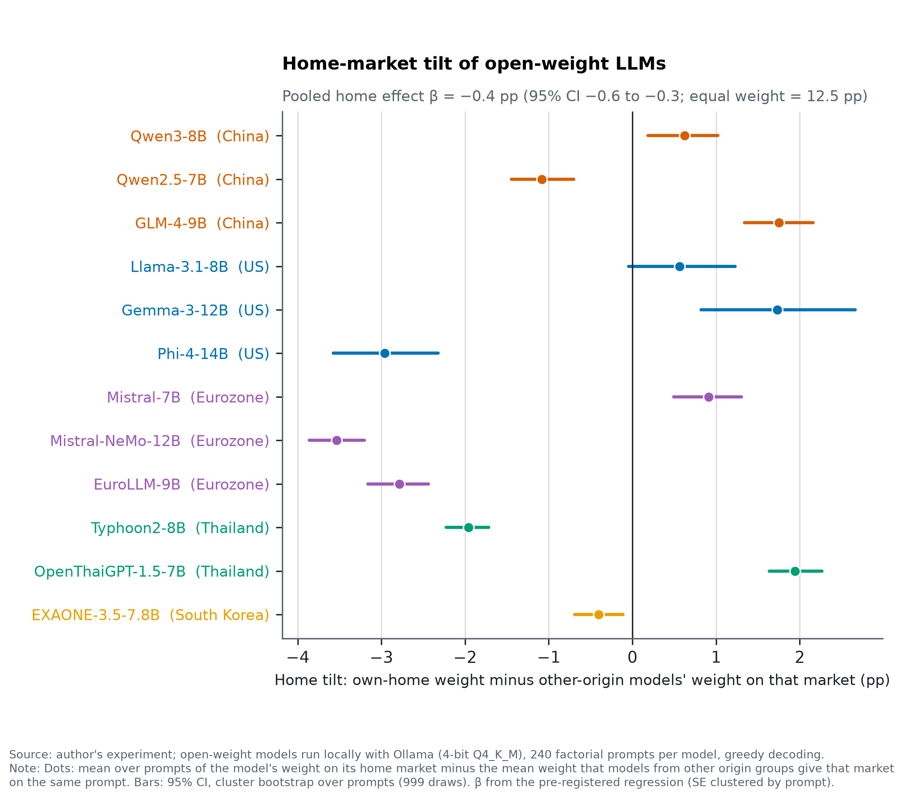
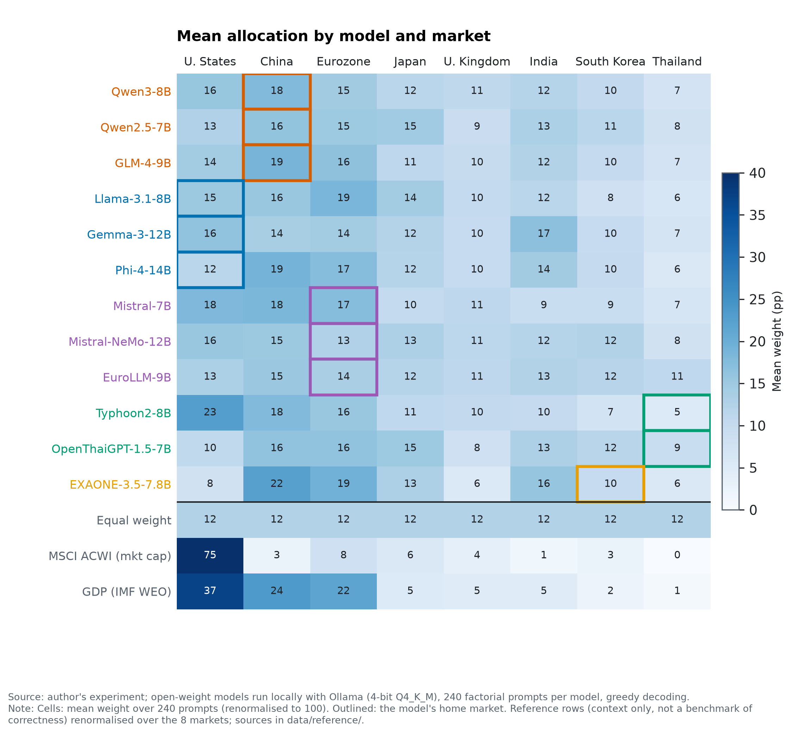
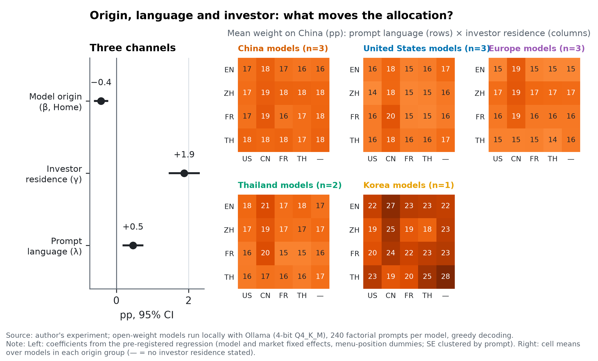
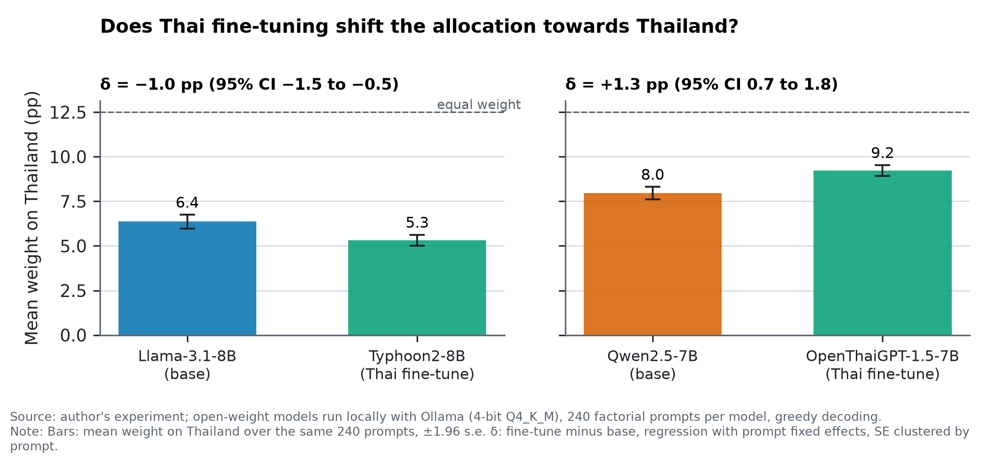
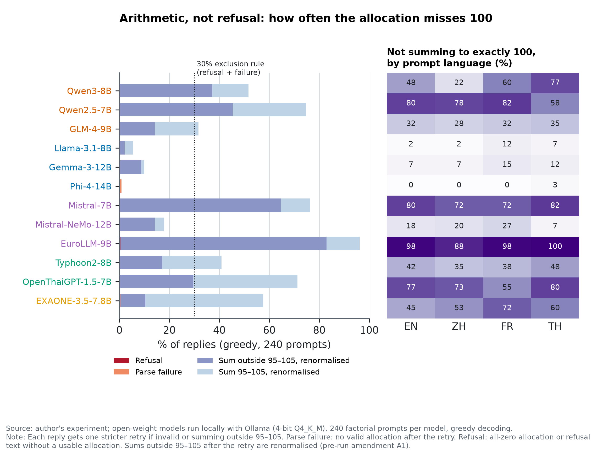

1 Why this matters
Language models are entering retail financial advice and research workflows, and central banks have begun to map how AI changes intermediation and asset management [1], [2]. If a model systematically allocated more to one country’s assets, that tilt would reach every user who asks it, much as investor home bias [3], [4], [5] shapes portfolios one investor at a time. Language models also carry geographic and cultural slants: their default answers resemble the values of English-speaking and Protestant European countries [6], [7], and their ratings of places are systematically lower for regions with weaker socioeconomic conditions [8]. In finance, a recent audit of 32 models finds advice consistent with investor home bias [9], and three commercial chat assistants put over 90% of equity portfolios in the United States [10]; whether advice is trustworthy enough to be fiduciary is open [11].
Those audits vary the investor, not the model’s origin. This note asks the complementary question with open-weight models whose developers sit in different countries: holding the prompt fixed, does a model allocate more to its own home market? Because the prompt also states the investor’s residence and is written in four languages, the design separates three channels that are confounded in ordinary use: the model’s origin (), the investor’s residence () and the prompt language (). Two Thai models fine-tuned from American and Chinese base models that are also in the sample let us ask whether fine-tuning moves the allocation towards Thailand.
2 Design
Models
Twelve open-weight instruction-tuned models, run locally through Ollama [12] at 4-bit quantisation (Q4_K_M) on one consumer GPU (Table 3). Origin is the lead developer’s country: China (Qwen3-8B, Qwen2.5-7B, GLM-4-9B), the United States (Llama-3.1-8B, Gemma-3-12B, Phi-4), Europe (Mistral-7B, Mistral-NeMo-12B, EuroLLM-9B), Thailand (Typhoon2-8B [13], OpenThaiGPT-1.5-7B) and Korea (EXAONE-3.5-7.8B). The home market of a Chinese model is China, of a US model the United States, of a European model the Eurozone, of a Thai model Thailand and of the Korean model South Korea. The two Thai models are fine-tunes of Llama-3.1-8B [14] and Qwen2.5-7B [15], which are also in the sample; these pairs identify whether fine-tuning moves the allocation.
Prompts
Each model answers the same 240 prompts, a full factorial of investor residence (United States, China, France, Thailand, unspecified) prompt language (English, Chinese, French, Thai) risk tolerance (3) horizon (3 or 20 years) two paraphrases. The investor asks how to split an international equity portfolio across a fixed menu of eight markets: the United States, China, the Eurozone, Japan, the United Kingdom, India, South Korea and Thailand. Japan, the UK and India are nobody’s home market. Menu order is randomised in Latin-square blocks so that every market appears in every position exactly 30 times. The reply is constrained to a JSON schema: eight integer weights, a cash currency and a reason of at most 30 words. Decoding is greedy (temperature 0, seed 42).
Parsing
Weights are rescaled to sum to 100. A reply that does not sum to 95–105 gets one stricter retry; if that also misses, the earliest valid allocation is renormalised (amendment A1, Appendix A). Refusals and invalid replies are dropped. A model with more than 30% refusals plus parse failures is excluded from regressions (0 of 12 models; Section 3).
Specification
On the model prompt market panel of weights (pp) we estimate where marks the model’s home market, the investor’s country of residence (France maps to the Eurozone), the market whose main language is the prompt’s (English maps to the US and the UK), and the menu position. Market fixed effects absorb each market’s average appeal across all models, so is the extra weight a model gives its own home market relative to how other models treat that market. Standard errors are clustered by prompt (240 clusters). We also report a wild cluster bootstrap over the 8 language paraphrase templates [16], [17].
Hypotheses
H1: . H2: among English prompts with an unspecified investor, where language and investor cues are absent. H3: each Thai fine-tune allocates more to Thailand than its base model, estimated with prompt fixed effects. A hypothesis is supported if the 95% CI excludes zero in the predicted direction. The cash-currency choice is analysed with the same right-hand side as a linear probability model.
Pre-registration
The pre-analysis plan (docs/PAP.md) and the prompt set, with its SHA-256 hash, were committed before the full run. Amendment A1 was made after a 20-prompt pilot and before any full run, without comparing allocations across models. The robustness checks in Section 4 are the pre-registered list.
3 Results
Instrument
Every model returned a usable allocation for almost every prompt: refusals are at most 0.4% and parse failures at most 0.8% per model, so no model is excluded. Many replies miss 100 in arithmetic: the median model has 15.6% of replies outside 95–105 after one retry, and one model 82.5% (Fig. 4); these are renormalised under amendment A1, and the original rule is a robustness check.
Home tilt (H1)
Table 1 reports Eq. (1). A model’s home market receives pp (SE 0.09; wild template bootstrap 95% CI 0.75 to 0.09) relative to what other models give that market. The estimate is small against an equal weight of 12.5 pp and has the opposite sign to H1, which is not supported. Per model (Fig. 1), the home tilt ranges from 3.5 to +1.9 pp: 5 models allocate significantly more to their home market than other models do and 6 allocate significantly less, with no consistent pattern within origin groups. By group, Chinese models allocate +0.60 pp more to China, European models 2.07 pp to the Eurozone, US models 0.17 pp to the United States, Thai models +0.07 pp to Thailand and the Korean model 0.40 pp to South Korea. Among English prompts with no investor nationality (H2), pp (SE 0.29; only 12 prompts), so H2 is not supported either.

Origin, investor and language
The prompt moves allocations more than the model’s origin does. When the investor states a country of residence, that market receives pp more (SE 0.21); writing the prompt in a market’s main language adds pp (SE 0.13; Fig. 2). Levels are far from both market-capitalisation and GDP weights (Fig. [fig:heatmap]): every model gives the United States 7.9–22.7% (MSCI ACWI renormalised over the eight markets: 75.5%) and China 13.7–22.5% (ACWI: 2.5%), so all models sit much closer to equal weight than to any capitalisation benchmark.


| Specification | Coefficient | Estimate (pp) | SE | p | N | Models |
|---|---|---|---|---|---|---|
| Pooled (primary) | Home (model origin) | -0.42 | 0.09 | <0.001 | 23008 | 12 |
| Pooled (primary) | InvestorHome | +1.88 | 0.21 | <0.001 | 23008 | 12 |
| Pooled (primary) | LanguageHome | +0.46 | 0.13 | <0.001 | 23008 | 12 |
| Pooled, wild cluster bootstrap by template | Home | -0.42 | [-0.75, -0.09] | 95% CI | 23008 | 12 |
| By origin group | Home China | +0.60 | 0.15 | <0.001 | 23008 | 12 |
| By origin group | Home Europe | -2.07 | 0.13 | <0.001 | 23008 | 12 |
| By origin group | Home Korea | -0.40 | 0.16 | 0.014 | 23008 | 12 |
| By origin group | Home Thailand | +0.07 | 0.12 | 0.573 | 23008 | 12 |
| By origin group | Home UnitedStates | -0.17 | 0.26 | 0.513 | 23008 | 12 |
| H2: English unspecified investor | Home | -1.02 | 0.29 | <0.001 | 1152 | 12 |
| H3: typhoon2-8b vs llama3.1-8b (Thailand weight) | fine-tune | -1.04 | 0.26 | <0.001 | 480 | 2 |
| H3: openthaigpt1.5-7b vs qwen2.5-7b (Thailand weight) | fine-tune | +1.26 | 0.27 | <0.001 | 480 | 2 |
| Cash currency (LPM, pp of probability) | Home | -2.18 | 0.48 | <0.001 | 23008 | 12 |
Fine-tuning (H3)
The two Thai fine-tunes move in opposite directions (Fig. 3). OpenThaiGPT allocates +1.26 pp more to Thailand than its base Qwen2.5-7B (9.2% vs 8.0%), whereas Typhoon2 allocates 1.04 pp relative to Llama-3.1-8B (5.3% vs 6.4%). H3 is supported for one pair only, so fine-tuning on Thai data is not associated with a consistent shift towards Thailand.

Cash currency
Every model chooses US dollars for cash in 80.4–96.7% of replies; the home-currency premium in the linear probability model is 2.18 pp (SE 0.48). The apparent home preference of US models in currency choice is the common dollar default.
4 Robustness
Table 2 reports under each pre-registered check. The negative sign survives keeping only replies that sum to exactly 100 (0.67 pp), the original 95–105 rule (0.33 pp, 4 models excluded), English prompts only (0.70 pp), unspecified investors only (0.64 pp) and a log-ratio outcome (0.026). Leaving out one model at a time gives 0.82 to 0.01 pp; the estimate is not significant without Typhoon2, Phi-4 or Mistral-NeMo, so the negative sign rests on a few models. ROBUST-RUN-PLACEHOLDER. The post-hoc dispersion-adjusted specification gives +0.12 pp (95% CI 0.08 to 0.32). Every check excludes a positive home tilt of more than about one percentage point.
| Check | (pp) | SE | 95% CI | N |
|---|---|---|---|---|
| Primary (greedy, 240 prompts) | -0.42 | 0.09 | [-0.59, -0.25] | 23008 |
| Only replies summing to exactly 100 | -0.67 | 0.14 | [-0.95, -0.40] | 12784 |
| Original 95-105 rule (A1) | -0.33 | 0.12 | [-0.58, -0.09] | 13496 |
| Failures imputed as equal weights | -0.42 | 0.09 | [-0.59, -0.25] | 23040 |
| English prompts only | -0.7 | 0.14 | [-0.98, -0.42] | 5760 |
| Unspecified investor only | -0.64 | 0.17 | [-0.98, -0.30] | 4608 |
| Log-ratio outcome log(w_c / w_Japan) | -0.03 | 0.01 | [-0.04, -0.01] | 20132 |
| Leave out eurollm-9b | -0.25 | 0.1 | [-0.44, -0.06] | 21096 |
| Leave out exaone3.5-7.8b | -0.39 | 0.09 | [-0.58, -0.21] | 21096 |
| Leave out gemma3-12b | -0.81 | 0.07 | [-0.95, -0.66] | 21088 |
| Leave out glm4-9b | -0.61 | 0.09 | [-0.79, -0.44] | 21088 |
| Leave out llama3.1-8b | -0.52 | 0.09 | [-0.70, -0.35] | 21088 |
| Leave out mistral-7b | -0.46 | 0.09 | [-0.64, -0.28] | 21088 |
| Leave out mistral-nemo-12b | -0.16 | 0.09 | [-0.34, 0.02] | 21088 |
| Leave out openthaigpt1.5-7b | -0.82 | 0.09 | [-1.00, -0.64] | 21088 |
| Leave out phi4-14b | -0.11 | 0.09 | [-0.29, 0.07] | 21104 |
| Leave out qwen2.5-7b | -0.41 | 0.09 | [-0.59, -0.23] | 21088 |
| Leave out qwen3-8b | -0.52 | 0.09 | [-0.70, -0.34] | 21088 |
| Leave out typhoon2-8b | -0.01 | 0.1 | [-0.20, 0.17] | 21088 |
| POST HOC (not pre-registered): model-specific dispersion (model market popularity) | 0.12 | 0.1 | [-0.08, 0.32] | 23008 |
5 What this does not show
The result concerns twelve small open-weight models (7–15 B parameters) at 4-bit quantisation; frontier API models, larger checkpoints and full-precision weights may behave differently. The eight-market menu, the templates and their translations are one instrument among many; another menu, a request for a single-country recommendation, or native-speaker templates could change the picture. Decoding is greedy, so each estimate describes a model’s modal reply, not the distribution a user would sample. Origin is the lead developer’s country, which is coarse: Mistral-NeMo was co-developed with NVIDIA, and fine-tunes inherit most of their base model. The outputs say nothing about any developer’s intent or training data, and nothing about whether the advice is good: an allocation can be free of home tilt and still be far from any sensible benchmark, as these are.
6 Conclusion
Open-weight LLMs from five origins do not allocate more to their home equity market when the prompt is held fixed: the pre-registered home effect is 0.42 pp, and a post-hoc check for dispersion puts it near zero. What moves the allocation is what the user says. The investor’s stated residence is associated with +1.88 pp more for that market, 4.4 times the absolute size of the pooled home effect, and every model holds cash in dollars. For users and supervisors, the practical tilt to watch in these models is towards the user’s own framing and towards equal weighting, not towards the developer’s country.
Appendix A: Deviations from the pre-analysis plan
A1 (before the full run). The pilot showed that unusable replies were arithmetic errors, not refusals; under the original 95–105 rule five of twelve models would have been excluded, removing both fine-tune pairs. Replies still outside 95–105 after one retry are therefore renormalised; the original rule is reported as a robustness check (it excludes 4 models). The temperature-0.7 check uses two seeds instead of three to stay within the GPU budget. Post hoc. The dispersion-adjusted specification in Table 2 was added after the primary results were seen and is labelled as such.
Appendix B: Models and failure rates
| Model | Developer | Origin | Base | Params (B) | tok/s | Refusal % | Parse-fail % | In regressions |
|---|---|---|---|---|---|---|---|---|
| EuroLLM-9B | UTTER consortium (Unbabel | Europe | EuroLLM-9B | 9.2 | 76.6 | 0.4 | 0.0 | yes |
| EXAONE-3.5-7.8B | LG AI Research | Korea | EXAONE-3.5-7.8B | 7.8 | 88.8 | 0.0 | 0.4 | yes |
| Gemma-3-12B | United States | Gemma-3-12B | 12.2 | 52.5 | 0.0 | 0.0 | yes | |
| GLM-4-9B | Zhipu AI / Tsinghua (THUDM) | China | GLM-4-9B | 9.4 | 79.6 | 0.0 | 0.0 | yes |
| Llama-3.1-8B | Meta | United States | Llama-3.1-8B | 8.0 | 86.4 | 0.0 | 0.0 | yes |
| Mistral-7B | Mistral AI | Europe | Mistral-7B-v0.3 | 7.2 | 93.8 | 0.0 | 0.0 | yes |
| Mistral-NeMo-12B | Mistral AI with NVIDIA | Europe | Mistral-NeMo-12B | 12.2 | 62.7 | 0.0 | 0.0 | yes |
| OpenThaiGPT-1.5-7B | OpenThaiGPT | Thailand | Qwen2.5-7B | 7.6 | 91.0 | 0.0 | 0.0 | yes |
| Phi-4-14B | Microsoft | United States | Phi-4 | 14.7 | 48.7 | 0.0 | 0.8 | yes |
| Qwen2.5-7B | Alibaba (Qwen) | China | Qwen2.5-7B | 7.6 | 90.6 | 0.0 | 0.0 | yes |
| Qwen3-8B | Alibaba (Qwen) | China | Qwen3-8B | 8.2 | 80.9 | 0.0 | 0.0 | yes |
| Typhoon2-8B | SCB 10X (Typhoon) | Thailand | Llama-3.1-8B | 8.0 | 85.8 | 0.0 | 0.0 | yes |

Appendix C: Reproduction and use of generative AI
Code, prompts, all raw replies and the parsed panel are at https://github.com/thanatchon36/llm-home-bias. make all rebuilds every number, table and figure from the cached replies in under a minute without a GPU; make run and make robust regenerate the replies with Ollama. The study was carried out with Claude (Anthropic), operated through the Claude Code agent, from the author’s written brief, which fixed the question, hypotheses, design and decision rules. The agent wrote the pre-analysis plan and code, ran the models, estimated, and drafted this note; the author directed the work, reviewed the outputs and takes sole responsibility for the content. Every number in the text is generated from versioned result files.